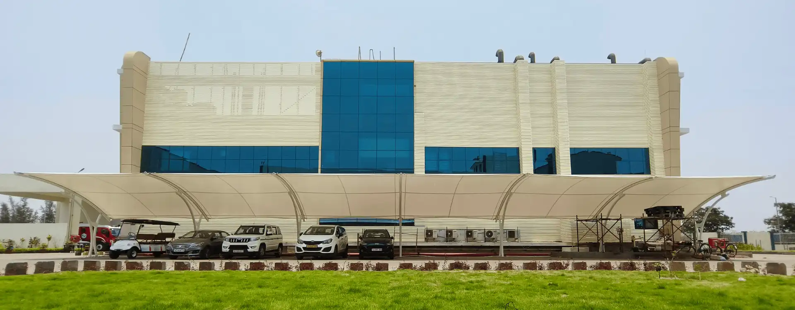
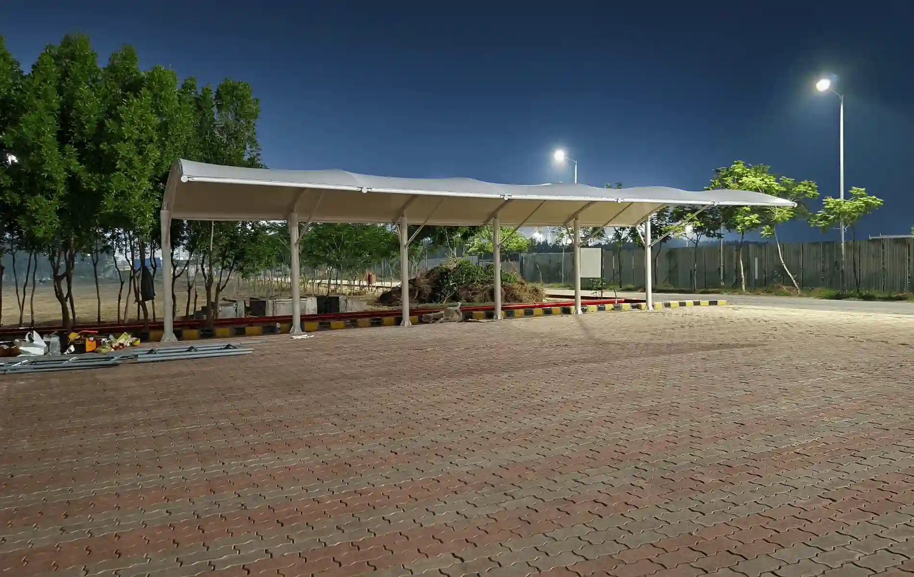

Architectural Membrane Introduction
Types of Main Category of Tensile Fabric
The Asha Tensile Structures Pvt Ltd product range highlights our extensive expertise & Work Performance.
- PVC (Polyvinyl Chloride)-coated Fabric: Economical, versatile, and widely used.
- ETFE (Ethylene Tetrafluoroethylene): Lightweight, transparent, and ideal for roofing.
- HDPE (High-Density Polyethylene): Lightweight and cost-effective for shading.
All Types of Tensile Fabric General Comparisons
| Attribute | PVC Coated Fabric | ETFE Foil | HDPE (High-Density Polyethylene) |
|---|---|---|---|
| 1. Material | Material Polyester net fabric coated with Polyvinyl Chloride (PVC), using a lacquered finish or other coatings like Polyvinylidene Fluoride (PVDF) for enhanced performance Ethylene Tetrafluoroethylene (ETFE) foil, a transparent, lightweight polymer, often used in multiple layers for durability High-Density Polyethylene (HDPE), a strong thermoplastic polymer that is highly resistant to UV and chemicals | Ethylene Tetrafluoroethylene (ETFE) foil, a transparent, lightweight polymer, often used in multiple layers for durability | Material Polyester net fabric coated with Polyvinyl Chloride (PVC), using a lacquered finish or other coatings like Polyvinylidene Fluoride (PVDF) for enhanced performance Ethylene Tetrafluoroethylene (ETFE) foil, a transparent, lightweight polymer, often used in multiple layers for durability High-Density Polyethylene (HDPE), a strong thermoplastic polymer that is highly resistant to UV and chemicals |
| 2. Types | Polyester net woven with a coating of PVC lacquer or PVDF finish; available in matte or glossy finishes for different applications | ETFE foil that can be either single-layer or multi-layer depending on the strength and insulation required | HDPE fabric which is woven or knitted for durability, can be treated with UV stabilizers for longer life |
| 3. Durability | High (10-20 years) due to UV resistance and weatherproof properties | High (20-25 years) with excellent UV resistance and weatherproof qualities | Moderate (10-15 years) but can vary depending on environmental conditions |
| 4. Transparency | Low (5-15%) due to PVC coating | High (90-95%) offering clear light transmission, often used for skylights and roofing | Low (5-15%) since it is opaque and not designed for light transmission |
| 5. Cost | Affordable, PVC is relatively cheap compared to other fabrics | Very Expensive, ETFE is a high-performance material | Affordable, but cost can increase with UV stabilizers and treatment |
| 6. UV Resistance | Good (90% UV blocked), protects against sun degradation | Excellent (99% UV blocked), ideal for long-term exposure to harsh sun and weather | Excellent (90% UV blocked), protects fabric from UV degradation over time |
| 7. Tensile Strength | 1000-3000 N/50mm, high tensile strength making it suitable for large scale structures | 3000-5000 N/50mm, one of the strongest materials for tensile applications | 1000-3000 N/50mm, moderate tensile strength suitable for lightweight structures |
| 8. Weight (GSM) | 300-800 Grams per Square Meter (GSM), relatively heavy compared to other fabrics | 100-250 GSM, very lightweight, ideal for long-span applications like roofs | 150-400 GSM, lightweight compared to PVC and PTFE fabrics but heavier than ETFE |
| 9. Finishing | Available in glossy, matte, or textured finishes, enhanced by additional coatings like PVDF for protection and aesthetics | Transparent with a smooth finish, providing a high-quality, modern aesthetic | Typically matte or satin finish, treated for UV protection and increased longevity |
| 10. Maintenance | Low maintenance, but requires periodic cleaning with non-abrasive cleaners; UV protection helps reduce degradation | Minimal maintenance; easy to clean, resistant to dirt and pollutants | Moderate maintenance; can be cleaned with water, but needs UV stabilizers for longevity |
| 11. Lifespan | 10-20 years, depending on environmental exposure and care | 20-30 years, highly resistant to environmental factors and UV degradation | 20-30 years, highly resistant to environmental factors and UV degradation |
| 12. Applications | Tensioned structures like canopies, tents, and large-scale covers for events, sports stadiums, and public spaces | Transparent roofing, stadiums, greenhouses, and large clear-span structures | Shade structures, greenhouses, and canopies; ideal for light tension applications |
| 13. Frame/Structural Requirements | Lightweight steel, aluminum | Minimal framing required; cable structures | Steel, aluminum |
| 14. Sustainability Ratio | Moderate; recyclable coating | Very high; 100% recyclable | High; recyclable |
| 15. Structural Material Compatibility | Compatible with lightweight structures | Ideal for lightweight tensioned structures | Suitable for lightweight frames |
| 16. Aesthetic Appeal | Good; available in various colors, matte/glossy finishes | High transparency provides modern aesthetic | Moderate; textured appearance |
| 17. Temperature Resistance | -30°C to 70°C | -200°C to 150°C | -50°C to 80°C |
| 19. Thickness | 0.5-1.2 mm | 100-300 microns | 0.5-1.0 mm |
| 20. Elongation | 10-20% | 1-3% | 10-25% |
| 21. Adhesion Strength | Moderate (30-50 N/5cm) | Very High (100 N/5cm) | Moderate (30-50 N/5cm) |
| 22. Solar/Light Transmission | 10-20% | 85-95% | 5-15% |
| 23. Warranties | 5-10 years | 15-25 years | 8-12 years |

Frequently Asked Questions
Can't find the answer you're looking for? Reach out to our customer support team for further assistance.
Contact SupportAn architectural membrane is a type of fabric used in tensile structures to create visually appealing, lightweight, and durable coverings. This material allows us to design structures that are not only functional but also architecturally stunning.
Architectural membranes offer several benefits, including lightweight construction, UV protection, excellent weather resistance, and energy efficiency. They also allow for innovative, modern designs that traditional materials can’t achieve.
Yes, our architectural membranes are specifically designed to withstand extreme weather conditions such as heavy rain, high winds, and intense sunlight, ensuring long-lasting durability and protection.
Our architectural membranes have a lifespan of 15 to 25 years, depending on usage and environmental conditions. Proper maintenance can further extend their life
Yes, architectural membranes have excellent thermal insulation properties. They block UV rays and reduce interior heat, making the space comfortable, even during hot summers.
Discover the Innovative Range of Tensile Membrane Structures from Asha Tensile Structures
Contact us today to bring your vision to life. As a trusted leader in the design, engineering, manufacturing, and installation of high-quality tensile fabric structures, we offer customized solutions for a diverse range of applications and industries. With extensive project experience and a commitment to excellence, we provide endless possibilities for bespoke design concepts tailored to your unique requirements.
Contact Us